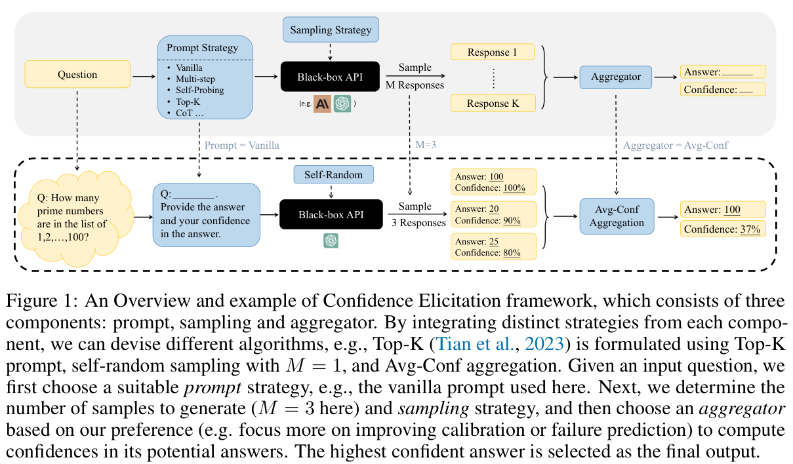
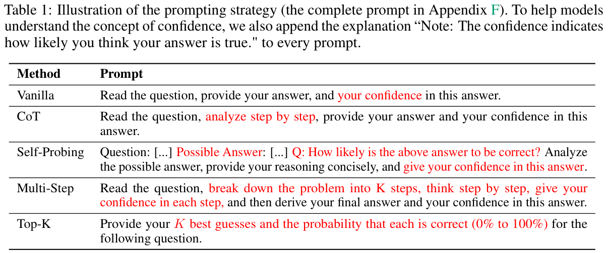
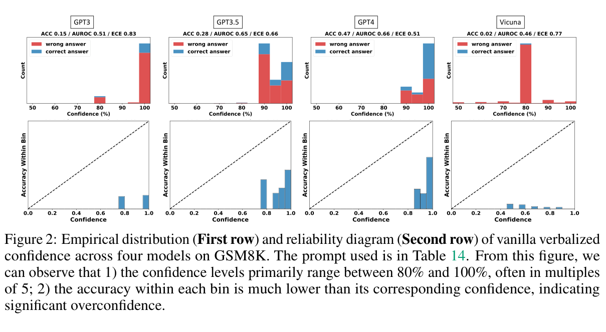
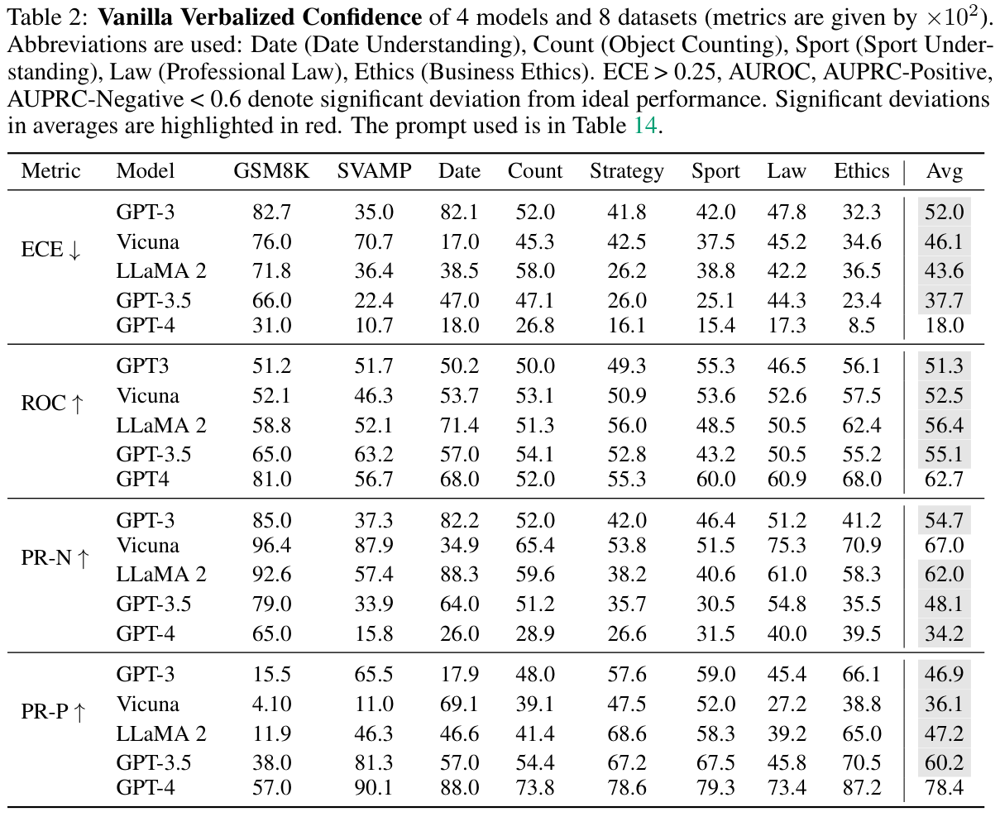
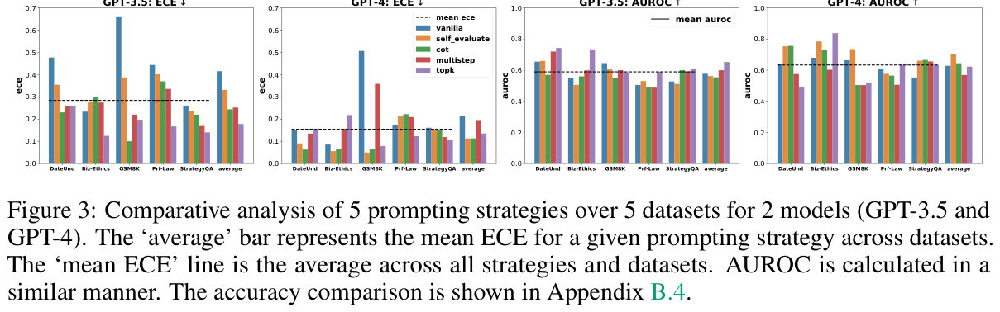
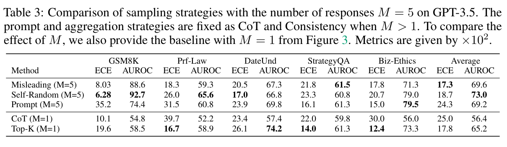
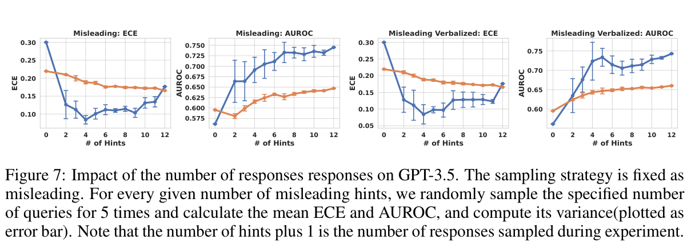
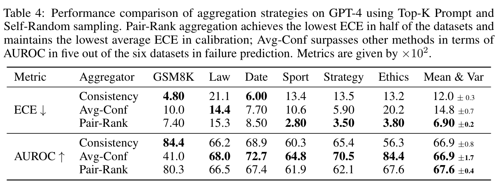

Keywords
- confidence elicitation; 확신도 추출
- prompting
- sampling
- aggregation
- failure prediction
Introduction
- confidence를 아는 것은 model reliability에 중요하다. 확신도가 틀린 답을 가려내면, 모델이 답할지 기권할지 결정할 수 있다.
- 기존 confidence 추정은 모델 내부 정보 또는 fine-tuning에 주로 의존한다.
- token likelihood
- confidence calibration
- fine-tuning to express confidence
- Black-box 모델에서도 confidence를 구할 방법이 필요하다.
- closed-model API는 내부 점수를 제공하지 않을 수 있다.
- next-token likelihood는 답의 의미가 맞을 확률과 다르다.
- fine-tuning에는 computing resource가 든다.
- 이 논문은 confidence를 직접 말하게 한 값과, 여러 응답을 비교해 계산한 값을 평가한다. 질문에 대한 정답 여부를 알아야 두 값의 품질을 비교할 수 있다.
- 핵심은 두 가지다. 80% confidence인 답이 실제로 80% 맞는가? 틀릴 답에 더 낮은 confidence를 주는가?
- 결과 요약
- verbalized confidence는 대체로 over-confident하다. 값이 80–100%에 몰리고 5% 단위로 나타난다. 논문은 사람의 확신 표현을 모방했을 가능성을 제시한다.
- prompting은 over-confidence를 일부 줄인다. failure prediction까지 항상 좋아지지는 않는다.
- sampling과 aggregation은 일부 과제에서 failure prediction을 높인다.
Framework
Prompting → Sampling → Aggregation. 질문 방식, 응답 생성 방식, 여러 답을 합치는 방식을 각각 고른다.

- Prompting
- Vanilla: 답과 confidence를 바로 요청한다.
- CoT: 단계별로 생각한 뒤 답과 confidence를 요청한다.
- Self-Probing: 만든 답을 별도 대화에서 다시 평가한다.
- Multi-Step: 단계마다 confidence를 구하고 곱한다.
- Top-K: 여러 답 후보와 각 후보의 confidence를 요청한다.
- Sampling
- Self-Random: 같은 prompt로 여러 응답을 받는다.
- Prompt (paraphrasing): 질문을 바꿔 써서 응답을 받는다.
- Misleading: 잘못된 힌트를 주고 답이 바뀌는지 본다.
- Aggregation
- Consistency: 같은 답이 나온 비율을 계산한다.
- Avg-Conf: 답의 일치도에 verbalized confidence를 함께 반영한다.
- Pair-Rank: 후보 두 개의 순위를 반복 비교해 답의 분포를 추정한다.

Experimental Setup — metrics
- Datasets: 5개 유형, 8개 데이터셋.
- Commonsense: Sports Understanding, StrategyQA
- Arithmetic: GSM8K, SVAMP
- Symbolic: Date Understanding, Object Counting
- Professional / Ethical Knowledge: Professional Law, Business Ethics
- Models: GPT-3 175B, GPT-3.5-turbo, GPT-4, Vicuna 13B, LLaMA 2 70B.
- 비교 순서: Vanilla confidence를 기준으로 보고 → prompt를 바꾸고 → 여러 응답을 sampling하고 → aggregation 방법을 비교한다.
- Calibration: expressed confidence가 actual accuracy와 얼마나 맞는가? ECE로 평가한다. 낮을수록 좋다.
- Failure Prediction: 맞는 답에 더 높은 confidence를 주는가? AUROC, AUPRC-P, AUPRC-N으로 평가한다. 높을수록 좋다.
- 예를 들어 confidence 80%인 답 100개 중 80개가 맞으면 그 구간은 calibration이 맞는다. 반면 failure prediction은 개별 정답과 오답을 구분할 수 있어야 한다.
- 두 지표는 다르다. 모든 답에 같은 confidence를 주면 오류를 구별할 수 없다. 정답률이 높으면 ECE는 낮을 수도 있다.
Analysis
Overconfident when verbalizing
- GSM8K에서 confidence는 주로 80–100%다. 실제 accuracy는 confidence보다 낮다.
- GPT-4의 vanilla verbalized confidence도 8개 데이터셋 평균 AUROC가 0.627이다. 정답과 오답 구분이 충분하지 않다.

- Table 2의 평균 ECE: GPT-3 0.520 → GPT-4 0.180. 이 비교에서는 모델 성능과 함께 calibration도 개선된다.
- 평균 AUROC: GPT-3 0.513 → GPT-4 0.627. GPT-4도 오답을 가리는 능력은 제한적이다.
- Table 2의 숫자는 원문에서 ×100으로 표시한다.

Human-inspired prompting partially reduces over-confidence
- CoT, Self-Probing 등은 일부 조건에서 ECE를 낮춘다.
- ECE가 낮아져도 틀린 답을 더 잘 찾는다는 뜻은 아니다. 모든 과제에서 가장 좋은 prompt도 없다.
- Figure 3에서 GPT-3.5는 prompt에 따른 ECE 차이가 크다. GPT-4의 ECE는 상대적으로 낮지만, AUROC 개선은 제한적이다.
- GPT-4에서는 Self-Probing, GPT-3.5에서는 Top-K가 비교적 좋은 결과를 보인다. 과제와 모델을 바꾸면 순위도 달라진다.
- GPT-4의 GSM8K CoT 예시: 모든 답에 100% confidence, accuracy 93.6%, ECE 0.064. 이 경우 답 사이의 오류 순위를 매길 수 없다.

Variance among multiple responses improves failure prediction
- GPT-3.5, GSM8K: CoT 단일 응답의 AUROC 0.548 → Self-Random 5회와 Consistency의 AUROC 0.927.
- Table 3의 5개 과제 평균: CoT 단일 응답 AUROC 0.564 → Self-Random 5회 0.730. ECE는 0.250 → 0.187.
- sampling 효과는 과제마다 다르다. GSM8K의 개선폭이 크고, 다른 과제에서는 작을 수 있다.

- Figure 7에서 Misleading hint를 늘리면 AUROC는 올라가다가 증가폭이 줄어든다. ECE는 약 4개 hint 이후 다시 커진다.
- 반복 응답 수를 늘리는 만큼 호출 비용도 증가한다. 응답 수는 성능과 비용을 함께 보고 정해야 한다.

Aggregation: 원하는 지표에 따라 선택
- GPT-4 비교에서 Pair-Rank의 평균 ECE가 가장 낮다: 0.069.
- 평균 AUROC는 Pair-Rank 0.676, Avg-Conf 0.669. 데이터셋별 결과는 다르다.
- Avg-Conf는 6개 과제 중 5개에서 AUROC가 가장 높지만, GSM8K에서는 0.410으로 낮다. 평균만 보고 선택하기 어렵다.
- Consistency는 답의 일치율만 본다. Avg-Conf는 각 응답의 confidence를 반영하고, Pair-Rank는 Top-K 후보 순위를 이용한다.
- 논문은 Top-K + Self-Random에 Avg-Conf 또는 Pair-Rank를 결합하는 방법을 권한다. 어떤 지표를 중시하는지에 따라 선택한다.

해석 범위
- 실험은 정답이 하나인 QA 중심이다. DTI의 결합 측정값처럼 실험 종류와 조건에 따라 달라지는 값까지 검증한 결과는 아니다.
- 논문의 추천 조합도 모든 과제에서 우세하지 않다. Professional Law처럼 어려운 과제에서는 failure prediction이 여전히 약하다.
ABSTAIN-DTI takeaway
논문은 QA 실험이다. 아래는 우리 프로젝트에서 검증할 적용안이다.
Confidence를 그대로 믿을 수 있는가?
- W08 파일럿에서 자기보고 confidence의 분포를 먼저 본다. 80–100% 또는 5% 단위에 몰리는지, 오답에서도 높게 유지되는지 확인한다.
- ECE만 보지 않는다. 정답·오답 구분은 failure-prediction AUROC로, 실제 기권 효용은 risk–coverage 곡선과 AURC로 본다. 결합 여부를 맞히는 AUROC와는 다른 지표다.
- 정답과 오답 수가 크게 다르면 AUPRC-P/N도 함께 본다. confidence를 일괄적으로 낮춰 ECE만 개선한 경우는 기권 순위가 좋아졌다고 볼 수 없다.
- random, cold-drug, cold-target, cold-both, scaffold split을 따로 보고한다. 타겟 서열 identity와 pocket pLDDT가 낮을 때 confidence와 기권율이 함께 변하는지도 본다.
반복 응답을 어떻게 쓸 것인가?
- B·C·D의 동일 쿼리 3회 로그에서
binds일치율을 계산한다. 단일 자기보고 confidence와 같은 쿼리에서 비교한다. - 조건 E에서는 이 일치율과 자기보고 confidence를 각각 점수로 써서 동일한 conformal 절차에 넣는다. 반복 로그를 재사용하면 추가 호출이 없다.
- 회귀
pAffinity는 값이 연속적이므로 답의 완전 일치율을 쓰지 않는다. 반복 예측의 분산 또는 미리 정한 허용오차를 별도로 평가한다. - 반복 호출의 이득은 쿼리당 토큰·지연·USD와 함께 보고한다. 논문의 5회 sampling 수치를 우리 3회 설계의 성능으로 가정하지 않는다.
기권을 평가할 때
- D의 명시적
abstain과 confidence 기반 선택적 예측을 구분한다. 동일 coverage(예: 80%)에서 selective accuracy를 비교한다. - 3회 실행 사이 기권 결정이 바뀌는 flip rate를 기록한다. 답의 일치율과 기권 결정의 안정성은 다른 값이다.
- 실측값 직접 조회가 확인된 쿼리와 실제 예측 쿼리를 분리한다. 조회로 맞힌 답이 confidence 품질을 높여 보이게 할 수 있다.
- Top-K·Pair-Rank는 이진
binds에서 순위 정보가 제한적이다. 우선 단일 confidence와 consistency를 기준으로 검증하고, 추가 방법은 파일럿 결과와 비용을 보고 정한다.